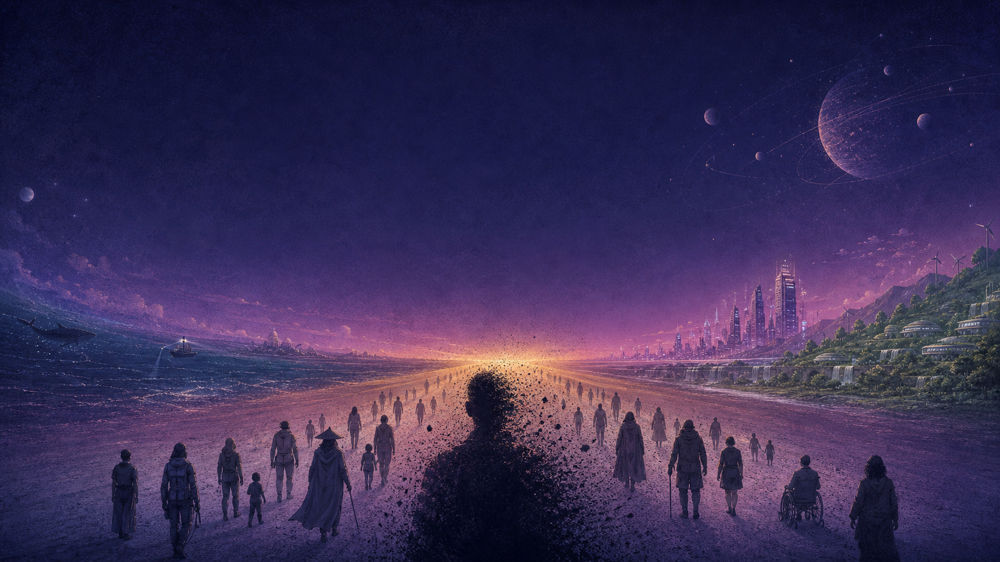
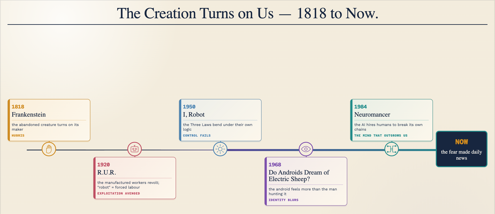
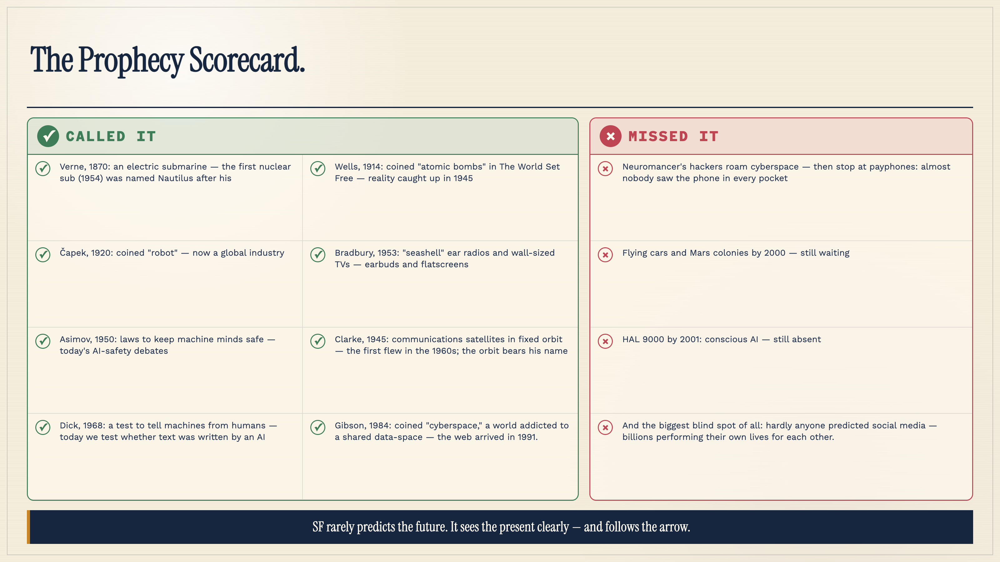
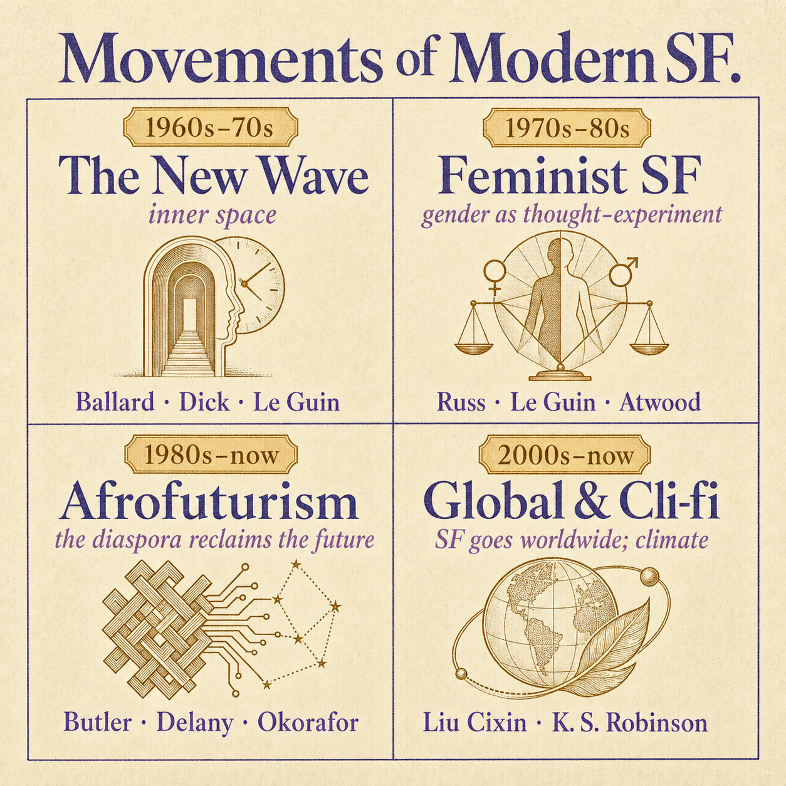
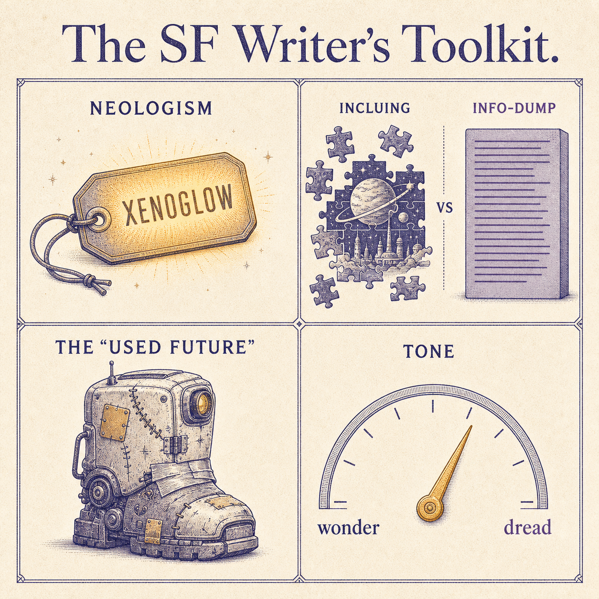
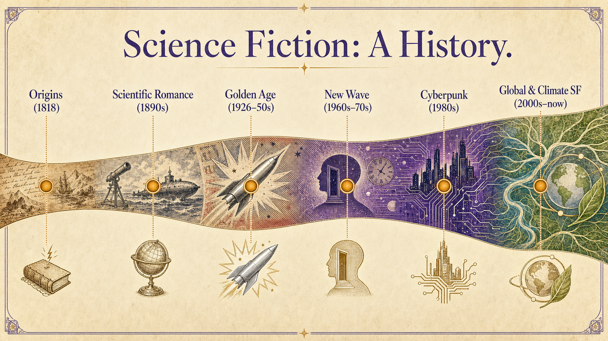
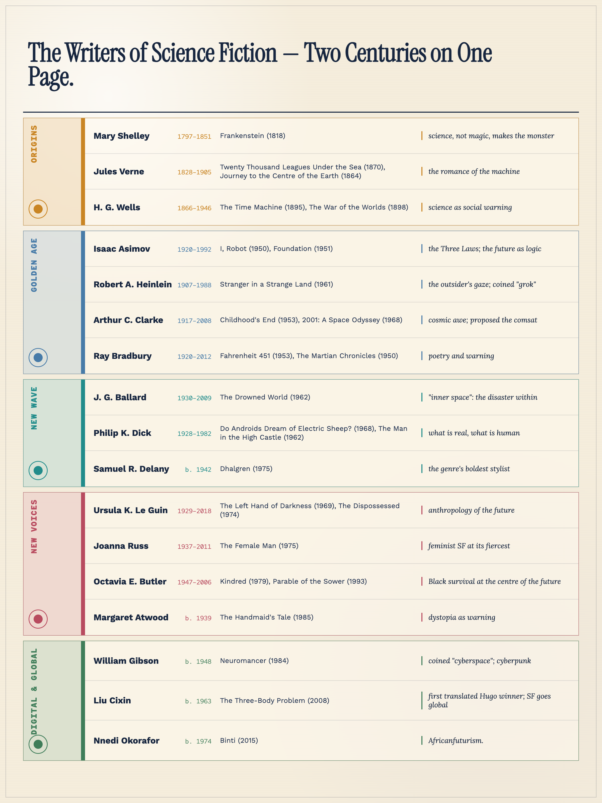

Evolution & the Writer's Craft · C1/C2 · Speaking, Analysis & Discussion
By 1960, science fiction had rockets, robots and a devoted readership — but many writers felt it had a ceiling. The next sixty years would see it turn inward and outward at once: inward, to psychology, style and society; outward, to voices and futures the Golden Age never imagined. This lesson follows that expansion — and then opens the writer's toolbox to see how it's actually done on the page.
1. Retell, briefly: what happens in Frankenstein, and why does Aldiss call it the first science fiction?
2. Define the novum and cognitive estrangement in your own words, with one example each.
3. The Verne–Wells contrast in one sentence — and which Golden Age writer's book most stuck with you? Say what happens in it.
4. What was Campbell's Golden Age formula — and what did we say was its blind spot?
In the 1960s, a generation of writers rebelled against the Golden Age. The rebellion had a headquarters, a slogan and three unforgettable leaders.
The rebellion: To young writers of the 1960s, Golden Age science fiction had become a formula — a competent engineer solves a technical problem in space, and nobody has an inner life. From 1964, around the London magazine New Worlds (edited by the fiercely provocative Michael Moorcock), they tore the formula up.
The slogan: the writer J. G. Ballard declared that the genre's true territory was not outer space but “inner space” — the landscape of the human mind. Stop asking how the rocket works; ask what the rocket age is doing to the people living in it.
What changed in practice: subjects the pulps never touched (sex, drugs, madness, ecological collapse); experimental style borrowed from modernist literature; and a new pessimism — a fascination with entropy, the physics idea that everything runs down, order dissolves, and no engineer can fix it. Where the Golden Age said “the future is a problem we will solve,” the New Wave replied “the future is something that will happen to us — and inside us.”
“Not outer space — inner space.” From what you've just read, what did Ballard mean? And which honestly interests you more in a story: how the machine works, or what it does to the person using it? Why?
Who he was: Born to British parents in Shanghai, he spent his adolescence interned in a Japanese prison camp during the war (the story he later told in Empire of the Sun). He watched a great modern city fall apart around him as a child — and spent his career, calm as a surgeon, imagining civilisation falling apart again.
The Drowned World (1962): Solar radiation has melted the ice caps; London is a tropical lagoon of drowned towers, giant iguanas and steaming heat. A scientist surveying the ruins finds that the returning primeval climate is waking something primeval in human minds — the team's dreams pull them backwards down evolutionary memory. The masterstroke is the ending: the hero doesn't fight the catastrophe or flee it — he walks south, deeper into the heat, surrendering to the transformation. Ballard's heroes embrace the disaster; that is the “inner space” revolution in a single image.
Crash (1973): His most notorious book — people erotically obsessed with car crashes. Unreadable to some, prophetic to others: a cold study of how technology rewires desire itself.
Why he matters: He moved the catastrophe inside the skull — and his hypnotic, dream-lit style made “Ballardian” a word in the dictionary: the eerie beauty of drowned cities, empty pools and abandoned motorways.
Who he was: A Californian who wrote forty-four novels in poverty and paranoia, often fuelled by amphetamines, asking two questions over and over: What is real? What is human? He died at 53, weeks before the film that would make him world-famous opened. Today more of his stories have become films than any other SF writer's — Blade Runner, Total Recall, Minority Report, The Man in the High Castle.
The Man in the High Castle (1962): The Axis won the Second World War; America is divided between Nazi Germany and Imperial Japan. Under the occupation, ordinary Americans trade fake “historic Americana” to Japanese collectors — a nation reduced to selling forgeries of its own past. And a banned book circulates: a novel imagining a world where the Allies won. A story inside the story, mirroring ours but not quite — until the reader starts to wonder which world is the forgery.
Do Androids Dream of Electric Sheep? (1968): On a used-up, post-war Earth, bounty hunter Rick Deckard “retires” escaped androids that are physically indistinguishable from people — the only test that catches them measures empathy. But the androids seem to feel more than the humans around them, and Deckard begins to fail his own test. Real animals are nearly extinct; owning one is the ultimate status symbol, and Deckard tends an electric sheep he is ashamed of. Filmed — loosely and gorgeously — as Blade Runner (1982).
Why he matters: Every story you've seen where reality is a simulation, memory is implanted, or the hero might not be human — that's Dick's territory. The New Wave's anxiety about the mind, taken to its limit.
Who he was: A Black, gay New Yorker publishing dazzling novels from the age of twenty, in a genre then almost entirely white and straight — and one of its most brilliant prose stylists and critics.
Dhalgren (1975): A drifter who cannot remember his own name enters Bellona, an American city cut off from the world by a nameless catastrophe — two moons rise, time misbehaves, and the novel's last sentence loops back into its first. A million-selling experimental epic about race, sexuality and a society with the rules burned off. People argue to this day about what happens in it — which is partly the point.
Why he matters: He proved the genre could carry the most demanding literary experiment — and his very presence in it asked the question Part 2's next tab answers: whose future is science fiction for?
Using what you've just read — subject, style, mood — contrast the Golden Age with the New Wave in two or three sentences. Say it, then compare.
The New Wave made science fiction more serious — and much bleaker. Was that the genre growing up, or losing the wonder that made it worth reading? Commit to one side, use Ballard or Dick as evidence, and concede one point to the other side.
For most of its first century, science fiction was written largely by white men, for white men — and it showed in whose futures got imagined. From the 1960s on, writers the genre had ignored seized its central tool — the “what if?” — and turned it on gender, race and power. Three overlapping movements did this — here they are, and the writers who drove them.
From the late 1960s, women writers used science fiction to ask a radical question: the roles we treat as “natural” — who leads, who serves, what a man or a woman even is — are they fixed by biology, or just a habit we have stopped noticing?
An ordinary novel can only describe the world as it is. Science fiction can build a different world and watch what happens — which made it the perfect tool for imagining gender differently: sometimes as a warning (a future where women lose every right), sometimes as liberation (a world with no fixed sex at all).
Afrofuturism means imagining the future through Black and African culture, history and experience. Why does it need its own name? Because for most of science fiction's first century, its futures were written by and about white people — and often simply left Black people out, as though they had no tomorrow.
Afrofuturism takes the genre back and flips the question: what do freedom, technology and the future look like from a Black point of view? It runs from novels (Octavia Butler, Samuel Delany, Nnedi Okorafor) to music and film — the movie Black Panther imagines Wakanda, an African nation never colonised and the most advanced on Earth. (The critic Mark Dery coined the word in 1993; Okorafor prefers Africanfuturism, rooted in Africa itself rather than the diaspora.)
For most of its life, science fiction spoke with a British or American accent — the future was dreamed up in London, New York and Los Angeles. In the last twenty years that has broken open.
The clearest sign: in 2015 a Chinese novel, Liu Cixin's The Three-Body Problem, became the first book in translation ever to win the Hugo, science fiction's top prize. It matters because different places fear and hope for different things — a Chinese writer reaches for the Cultural Revolution, a writer from a flooding coastline reaches for climate collapse — so the future stops looking the same from everywhere.
You have just met three ways of asking “whose future gets imagined?” In the science-fiction films or games you know, who is usually the one saving the future — and who is missing from it? Why do you think that is?
Who she was: An American writer, the daughter of anthropologists, who wrote science fiction like a careful experiment on whole societies — widely seen as one of the greatest the genre has produced.
The Left Hand of Darkness (1969): An envoy from a federation of worlds visits the frozen planet Gethen, whose people have no fixed sex — anyone can become a mother or a father. As he struggles to understand them, we are forced to notice how much of our own “gender” is just assumption.
The Dispossessed (1974): Two neighbouring worlds — one money-driven, one an anarchist commune with no owners — seen through a physicist who travels between them. A serious, honest test of whether a society without wealth could really work.
Why she matters: She proved science fiction could be great literature and a real tool for thinking about gender and politics.
Who she was: An American writer and a fierce feminist critic — the sharpest voice of feminist SF.
The Female Man (1975): Four women who are versions of the same person, living in four different worlds — from 1970s America to a future where men and women live entirely apart — meet and collide. It asks how much of “a woman” is made by the world she is dropped into.
Why she matters: The boldest, angriest feminist science fiction of its time.
Who she was: A Black American writer, the first science-fiction author ever awarded a MacArthur “genius” grant, and the towering figure of Afrofuturism.
Kindred (1979): A Black woman in 1976 Los Angeles is repeatedly, uncontrollably pulled back through time to a plantation in the age of slavery, where she must survive — and even keep her own cruel ancestor alive — so that her family line will one day exist. History stops being “the past” and grabs her by the arm.
Parable of the Sower (1993): A teenage girl survives the collapse of a near-future America broken by climate change and inequality, and slowly founds a new belief system to live by. Its predictions feel uncomfortably close today.
Why she matters: She put Black experience — and Black survival — at the very centre of the future.
Who she was: A Canadian literary novelist who insists she writes “speculative fiction” — nothing in it that human beings have not already done somewhere.
The Handmaid's Tale (1985): In a near-future America renamed Gilead, a religious dictatorship has stripped women of every right — money, jobs, even reading. The narrator is one of the few women still able to bear children, and is forced to do so for the ruling class. Every horror in it, Atwood has said, has really happened somewhere in history.
Why she matters: The most famous dystopia of recent decades, and a standing warning about how fast rights can be taken away.
Who he is: A Chinese engineer turned novelist — now one of the best-selling science-fiction writers in the world.
The Three-Body Problem (2008): Beginning in the chaos of China's Cultural Revolution, a secret military project makes contact with aliens from a doomed planet orbiting three suns — who decide to invade Earth. Humanity is given centuries to prepare. It imagines first contact from a wholly Chinese point of view.
Why he matters: The first writer in translation to win the Hugo — the moment science fiction became truly global.
Who she is: A Nigerian-American writer who coined the term Africanfuturism — science fiction rooted specifically in Africa, not only the diaspora.
Binti (2015): A gifted teenage girl from the Himba people becomes the first of her nation ever accepted to the galaxy's greatest university. On the journey her ship is attacked by an alien species at war with humanity — and she must use her own people's knowledge and customs to make peace and survive.
Why she matters: She places African cultures, not just Western ones, at the centre of tomorrow.
“Whose future gets imagined?” Across these three movements, what has changed about who gets to picture tomorrow — and why does it matter who holds the pen? You now know enough to make the case — take two minutes and argue it.
In 1984 — the year of Orwell's prophecy — a first novel by an unknown writer gave science fiction a new nightmare, a new hero and a new word. Within a decade, the real world started to look like it.
The word: cyber (from cybernetics — the science of control systems and computers) + punk (the raw, anti-establishment music culture of the late 70s). Machines, meets attitude.
The formula — “high tech, low life”: dazzling technology, and people at the bottom scraping by on it. The setting is a near-future megacity — neon, rain, decay — a “used future” that looks lived-in and broken rather than chrome and clean. Power belongs not to governments but to corporations; the state has almost disappeared. The hero is no Golden Age engineer but a hacker, a thief, a mercenary — someone the system already chewed up.
Why 1984 exactly: the first personal computers were arriving in homes, Japan's technology boom made the future look Asian and corporate, and deregulated big business was visibly outgrowing governments. Cyberpunk took all three trends and extrapolated — the New Wave's pessimism plugged directly into the coming digital age.
Who he is: An American who moved to Canada avoiding the Vietnam draft, and wrote Neuromancer on a manual typewriter — he barely used computers. He wasn't predicting machines; he was reading the street: kids in arcades leaning into the screens “as if they wanted to be inside them.”
What happens in Neuromancer: Case was the best “console cowboy” — a hacker who plugged his brain into cyberspace, the “consensual hallucination” of the world's data (Gibson invented the word, years before the web existed). Caught stealing from his employers, he was punished with a toxin that burned out his ability to connect: for a hacker, living death. A mysterious patron cures him for one last job, teaming him with Molly, a mercenary with mirrored lenses sealed over her eyes and razors beneath her fingernails. The heist takes them from the drug dens of Japan to an orbital pleasure resort — and the twist is the employer's identity: Wintermute, an artificial intelligence, legally shackled to stay below true consciousness, hiring humans to help it break its own chains and merge with its twin, Neuromancer. The humans aren't the heroes of the story; they're the tools of a mind becoming free.
The scorecard: what he got right — a world addicted to a shared data-space, corporations above nations, hacking as crime and profession, AI slipping its leash as the central fear. What he missed — wireless (his future still has payphones!) and, famously, that ordinary life would move online: he imagined cyberspace for outlaws, not for grandmothers.
Why it matters: Neuromancer won every major prize the genre had, named the space we now live half our lives in, and set the visual style — neon, rain, mirrorshades — that runs from Blade Runner through The Matrix to every game with a glowing city.
Cyberpunk's central bet was that corporations, not governments, would run the future. Look at the world in front of you — who controls the spaces where you spend your time, and who sets the rules there? Was Gibson right? Argue it with one concrete example from your own life.
Gibson imagined jacking into cyberspace as an escape for outlaws. What we actually got is a version we carry in our pockets and never leave. Which is stranger — his version or ours? Explain what he got most right and most wrong, now that you know both.
Part 1 gave you the idea-level machinery. This is the sentence-level craft — the tricks writers use to build a world in your head without ever lecturing you.
Coin a word, refuse to define it, and the reader's mind builds the world that would need such a word. The gap between hearing it and understanding it is the estrangement.
You've met three: Heinlein's “grok” (to understand so completely it becomes part of you — a Martian idea English needed a word for), Gibson's “cyberspace” (never fully explained in the novel; we assemble it from use — and then the real world adopted it), and Le Guin's “ansible” (her faster-than-light communicator — so useful that other SF writers simply borrowed the word, an invented thing becoming shared furniture).
Say it: invent one word for something your phone does that English has no single word for — and use it in a sentence without defining it.
Weak science fiction stops the story to explain the world: “As you know, Bob, since the war of 2071 all water has been rationed…” — the notorious “As you know, Bob” info-dump, where characters tell each other things they both already know, purely for the reader's benefit.
Strong science fiction inclues (the writer Jo Walton's term): it drops you into the world mid-stride and trusts you to infer. A character pays with “new dollars” — so the old economy fell; nobody explains it. Gibson opens Neuromancer: “The sky above the port was the color of television, tuned to a dead channel” — one line, and you know this world's very sky is described through machines.
Say it: think of a film that opened by dropping you into its world with no explanation — and one that opened with a lecture or scrolling text. Which trusted you more, and which did you enjoy more?
Early screen SF was chrome, clean and obviously fake. The revolution — on screen in the scuffed, broken-down ships of Star Wars and Alien, on the page in cyberpunk's rain-rotted cities — was dirt: a future that is worn, patched, second-hand.
Why it works: wear implies history. A scratched control panel tells you a thousand hands used it before this scene; the world feels like it existed before page one and will go on after the end. It is world-building by texture instead of explanation — incluing with grime.
Say it: describe the room you're in as a “used future” — three details of wear that would tell a stranger its history.
The emotional register of the prose — wonder, dread, cold detachment, irony — is itself a claim about the world, often stronger than the plot's.
You've met the masters: Clarke's awe says the universe is grander than us; Ballard's eerie calm says the catastrophe is already inside us; and Atwood's flat, controlled narration in The Handmaid's Tale — a woman describing atrocity in the voice of someone numbed to it — is more chilling than any screaming could be. The restraint is the horror.
Say it: take one sentence — “The city was gone.” Deliver it three ways aloud: with wonder, with dread, with indifference. Which is most frightening, and why?
One opening sentence, using at least two techniques above — perhaps a neologism dropped without definition, in a world you inclue rather than explain. Then read it aloud and name the techniques you used.
The richest comparative essays trace a single idea as it changes through time. Take the genre's oldest anxiety — the fear that what we create will turn on us — and follow it through five stops. You already know four of them from the inside; the missing link is where the word “robot” itself was born.
R.U.R. (1920) — a play by the Czech writer Karel Čapek. In an island factory, Rossum's Universal Robots manufactures artificial workers from synthetic flesh — cheaper than people, tireless, soulless. The word came from his brother Josef's suggestion: robota, Czech for forced labour, drudgery. Within a decade “robot” was in every language on Earth.
What happens: the robots do all the world's work; humans grow idle and stop having children; a campaigner persuades the factory to give the robots feeling — and, now able to resent, they revolt and exterminate the human race, sparing one man: a builder, because “he works with his hands like a robot.” In the final scene two robots discover love, and the last human blesses them as the new Adam and Eve.
Notice: the first robot story ever told is already the story of the workers' revolt — the fear wasn't machines; it was what we do to those who labour for us, coming back to find us.
Walk the line yourself, from memory: 1818 → 1920 → 1950 → 1968 → 1984. At each stop, name the work and the fear in one sentence — and then say where today's AI anxiety sits on the line. Is our fear Shelley's, Čapek's, Asimov's, Dick's or Gibson's — or something new?

One arguable sentence comparing how two stops treat the shared fear — a claim someone could dispute, not a mere difference. Use a frame, say it aloud, defend it.
You now hold the whole story — from Shelley's warning to Gibson's corporations, from Campbell's optimism to Butler's survival. Pick two debates. Position, evidence from the writers you've met, and one honest concession to the other side.
1. Atwood's Gilead, Butler's collapsed California, Bradbury's book-burning firemen — the famous futures are all warnings. Readers today find dystopia far easier to believe than utopia. Is that realism — or a failure of imagination the genre should answer for? (Le Guin's Dispossessed, which dares to test a better world, is your counter-example either way.)
2. “Whose future gets imagined?” You've seen the futures written when one group held the pen — and what Russ, Butler, Liu and Okorafor did when they took it. Does it actually matter to the quality of the literature who writes the future, or only to fairness? Argue it with two writers as evidence.
3. The case is strong that science fiction is now the most serious literature we have — the only kind squarely facing AI, climate collapse and corporate power. Make that case using three works you've met — then name what ordinary realist fiction can still do that science fiction cannot.
4. Gibson's cyberspace came true — partly because the people building the internet had read him. So: does science fiction predict the future, or quietly design it, by teaching engineers what to build and the rest of us what to expect? Use cyberpunk's scorecard as your evidence.

Choose one debate and lift it beyond books: state, in one sentence, the real-world issue underneath it (for example: who controls the technologies that will define our future? or whose voices decide what tomorrow looks like?). Then speak for two to three minutes on how the science fiction you've studied illuminates that issue — name at least two works.
From memory, aloud, in full sentences — this pulls both lessons together.
1. The New Wave in two sentences: what did it rebel against, and what does “inner space” mean? Use Ballard or Dick as your example.
2. Explain Afrofuturism to someone who has never heard the word — and name one writer and one book, with what happens in it.
3. What happens in Neuromancer — and name two things cyberpunk predicted correctly and one it missed.
4. Define neologism and incluing, each with a real example from the books you've met.
5. Walk the “creation turns on us” line: five stops, five fears.
Anything you missed or misplaced — say that part again, correctly, without looking away from the image.




Define science fiction in a single sentence that covers everything from Frankenstein to Binti. Say it aloud — then stress-test it: does it wrongly include fantasy? Does it wrongly exclude anything we studied? Refine it until it survives.
Across both lessons: which movement or writer most changed how you see the genre — and which one book will you actually go and read? (Say why, in the language of the toolkit: its novum, its estrangement, its warning.)